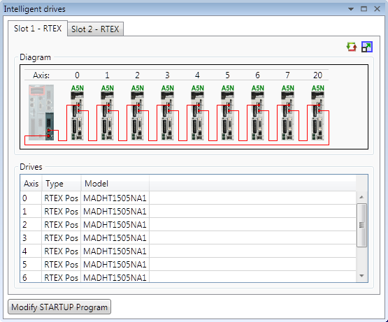
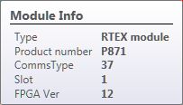
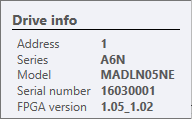
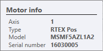
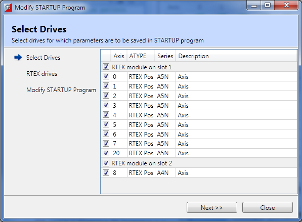
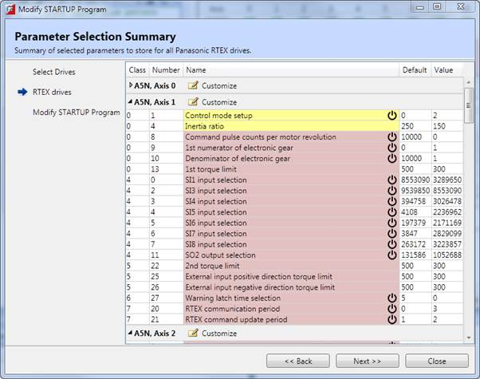
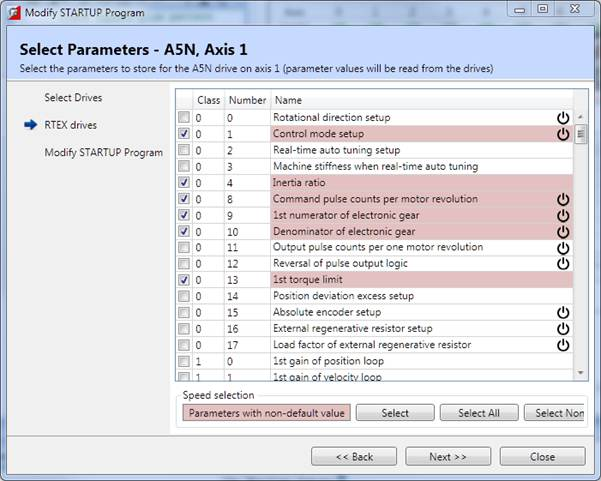
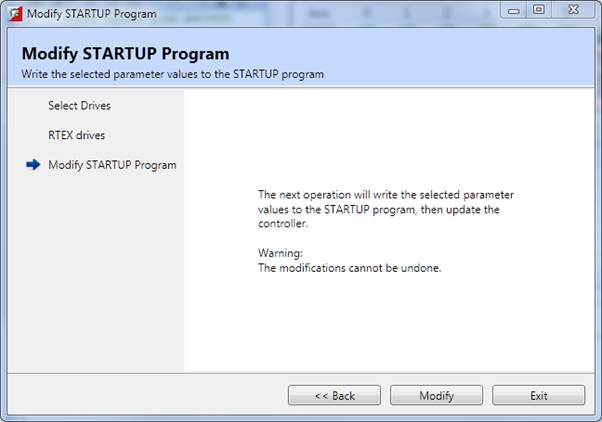

Panasonic A4N and A5N series RTEX drives.
The Intelligent drives dialog contains a tab for each of the controller's interface modules to which supported intelligent drives can be connected. On a tab for an RTEX module a diagram of the drives and a list of the correspondingly assigned axes is displayed along with data for each drive and the motor connected to it.

The
 icon toggles between a normal and
higher resolution view of the controller and connected drives.
icon toggles between a normal and
higher resolution view of the controller and connected drives.
If drive information is not filled in for an axis it may mean that the SERVO_PERIOD for the controller is not set correctly.
Hovering the mouse cursor over the controller displays a pop-up containing information about the current interface module.

Hovering the mouse cursor over a drive displays a pop-up containing information about the drive.

Hovering the mouse cursor over a motor displays a pop-up containing information about the motor.

Double-clicking in a drive icon, motor icon, or a line in the Drives grid will bring up an RTEX Drive dialog for the corresponding drive.
Important drive parameters can be put in the STARTUP program in order to make sure that drives are configured correctly. The STARTUP program will check the value of a set of parameters defined by the user and update any which are not at the required value. The "Modify STARTUP Program" button starts up a configuration wizard to allow the user to specify which parameters to store.

This page allows the user to select to drives for which parameters will be stored in the STARTUP program. Normally the user will wish to store parameters for all drives.
Clicking on "Next" will cause Motion Perfect to scan all the selected drives and then display a series of parameter selection pages. The scanning process can take a significant amount of time, especially if many drives are attached.
This page will be displayed once for each family of drives used (A4N and A5N) as each drive family has a different set of parameters.

This page controls the saving of parameters for all drives
of a series (A5N in the picture above). The parameter names are coloured if any
values are non-default,
 if that parameter on all drives has a
non-default value, and
if that parameter on only some drives
has a non-default value. Parameters which require the drive to be power-cycled
before any change will take effect are marked with the symbol
.
After the parameters are selected, clicking in the "Next" button will
either display the same page but for a different drive family or a Parameter
Selection Summary Page.
if that parameter on all drives has a
non-default value, and
if that parameter on only some drives
has a non-default value. Parameters which require the drive to be power-cycled
before any change will take effect are marked with the symbol
.
After the parameters are selected, clicking in the "Next" button will
either display the same page but for a different drive family or a Parameter
Selection Summary Page.
Parameter values are always read from the connected drives.

This shows which parameters have been selected for each drive in the system (initially they will be the same for all drives of the same family) and allows the user to change which parameters are stored for each drive individually. The parameters are grouped by drive (axis number) and clicking on the "Customize" icon in the group header for a drive will show a "Select Parameters" page for a single drive.
Clicking on "Next" displays a warning page about writing the STARTUP program.

This is similar to the " Select Parameters, All Drives " page but only changes which parameters are stored for a single drive. Clicking on "Next" will return to the " Parameter Selection Summary " page.

This warning page is displayed before the accumulated parameter information is written to the STARTUP program. Clicking on the "Modify" button will cause the STARTUP program to be modified and written to the controller.